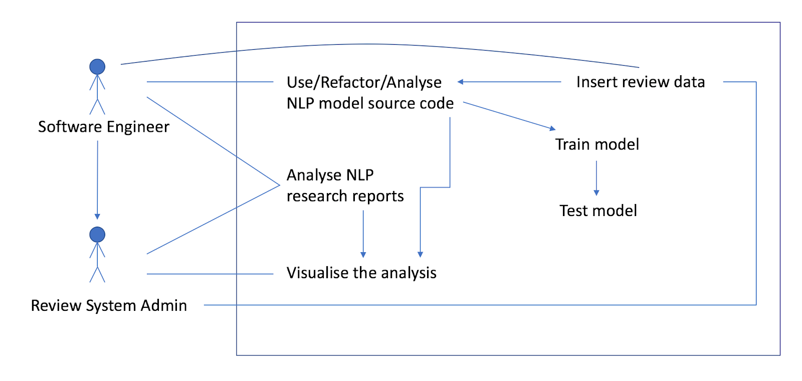
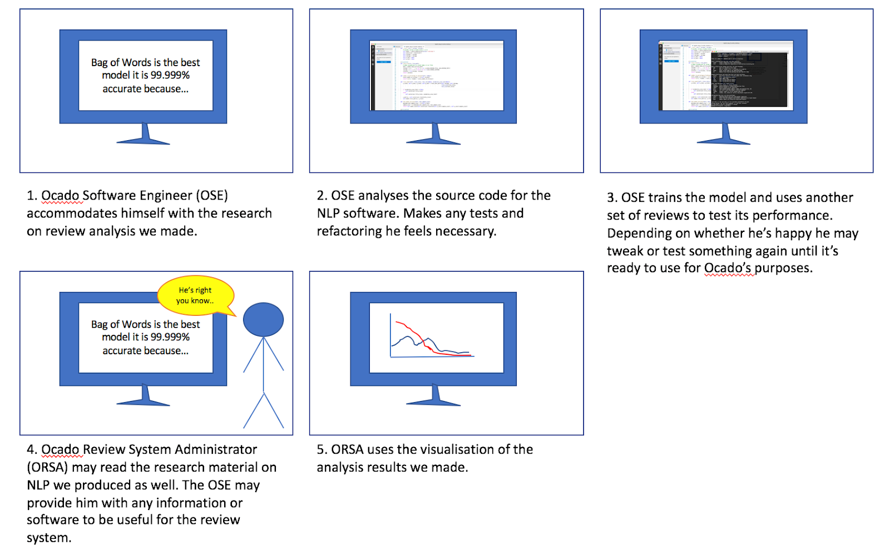

Introduction to project background and client
Our client is Ocado. It is an online supermarket where people can shop grocery online and their grocery will be delivered to their doorstep. Shoppers can express their opinions on the products by writing reviews on the company’s website. Our project is oriented around investigating into this review system.
Project goal
Our project goal is to investigate and design various natural language processing models for the review system on Ocado’s website. In other words, the goal is to design machine learning algorithms that can accurately correlate between a review’s text and its rating or helpfulness score.
Requirement gathering
The requirements given on the project task sheet were unclear, so we arranged a video conference meeting with our client. During the meeting, they gave us a list of requirements and told us which requirements we must achieve and which requirements are of lower priority. In subsequent meetings we further clarified any ambiguities and updated the requirements list as needed.
To gather our requirements and any other crucial information from our client we prepared a list of questions to ask before each meeting. Here is an example list of the questions we prepared for one of the meetings:
- What kind of application/user interface?
- Do we need to do the visualisation for reviews?
- Do we need to encourage users to review?
- What is generation and summarization(research level)?
- Ask clients to give data.
Personas
Adam Smith is a 25 year old software engineer who manages and develops code for various aspects of his organisation's processes. Part of his job is to research and implement new possible innovations that could improve the company's performance. He is very proficient with programming in many languages including python and implementing new ideas into the system. If given someone's code to work with he'd appreciate if it was clear, well structured and flexible so that he can easily adapt what is useful and make any necessary refactoring or debugging without severe headaches.
Ben Johnson is a 35 year old administrator of the review system on his company's website. He doesn't understand languages like python as deeply as Adam but he is familiar with webpage related languages like HTML. His task is to manage and maintain the review section of the website and make sure that it fulfills its purpose of informing customers looking through the products. The natural language processing research can be useful to him but he may need some important visualisations of the analysis results.
User Case List
Software Engineer:
- Read the contents of the research data produced by us so they get the best picture possible of the NLP situation for the review system, what NLP models work best and other interesting or important discoveries.
- Uses the delivered NLP source code as they see fit. This means they could:
- Refactor it if the delivered code is slightly not in the right form to be used for Ocado’s needs.
- Execute it. They could have a pre trained program or train it themselves manually.
- There should also be infrastructure provided by us to test the NLP program in good detail.
- They can insert some of their review data from their website into the program.
- Potentially could brief the Review System Admin on any important information they know themselves or even help the RSA with the source code.
Review System Admin:
- Like software engineer, they can read the contents of the research report to be better able to understand the NLP solutions we came up with and why they are the best.
- As the admin of the review system they can also provide review data that they have access to to parse as input into the NLP program.
- Make use of the visualisations of the review analysis results as they see fit.
User Case Diagram
As the application of our project involves many discrete steps, we agreed it would be more clear if
we express it using a flow chart.

Storyboard
Moscow requirement list
Non-functional requirements in blue.
Functional requirements in black.
Must Have
- We must build up a machine learning model that can be used to predict the helpfulness and rating based on the comment text.
- We must use basic natural language processing techniques
- We must produce some research on application of NLP in Ocado’s reviews (methodological and experimental if possible).
- We must leave proper public APIs for developers to use our program.
Should Have
- We should go further by building more accurate models to predict a review’s rating and helpfulness.
Could Have
- We could use Deep NLP techniques and develop our program into generation and summarization stages.
- We could have a simple demo website that shows the outcomes of our program in a straightforward way.
Won't Have
- Visualisation of data and methods to encourage users to review on products, because they are two completely different projects from machine learning one.